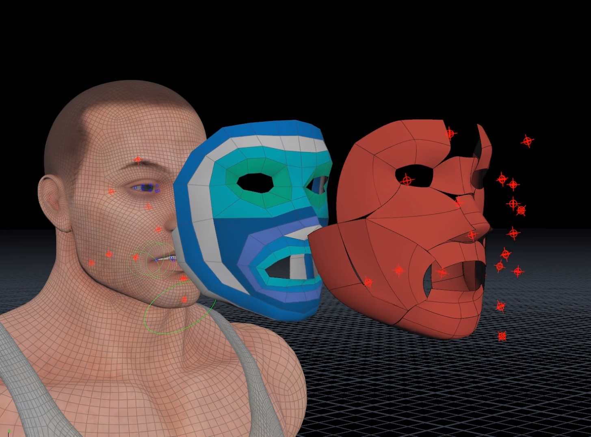
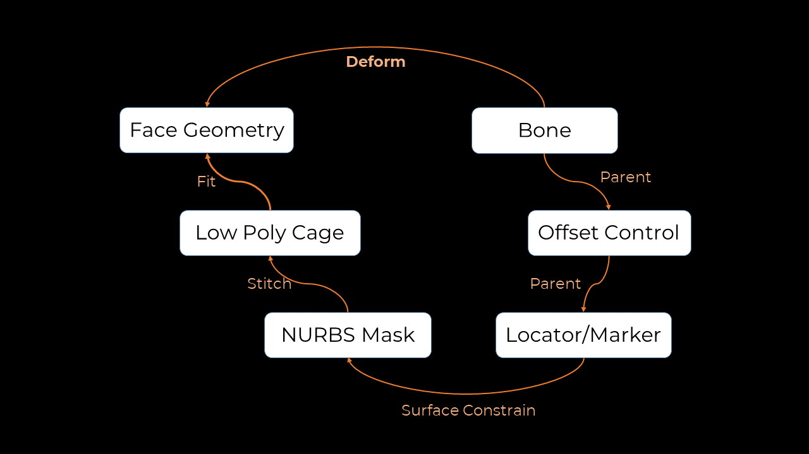
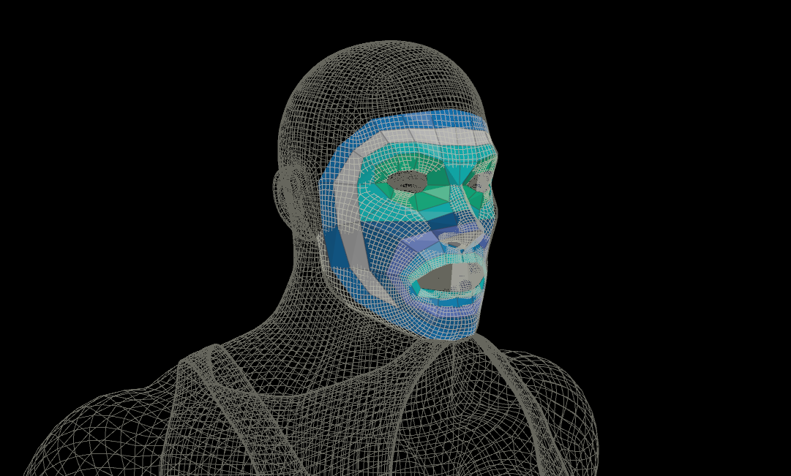
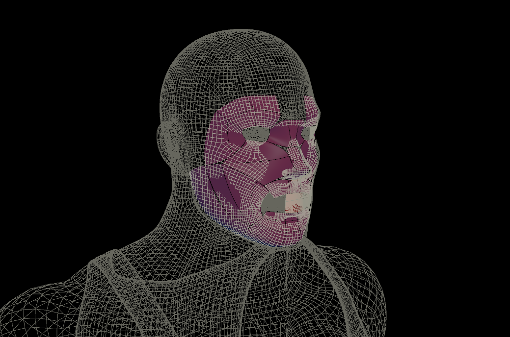
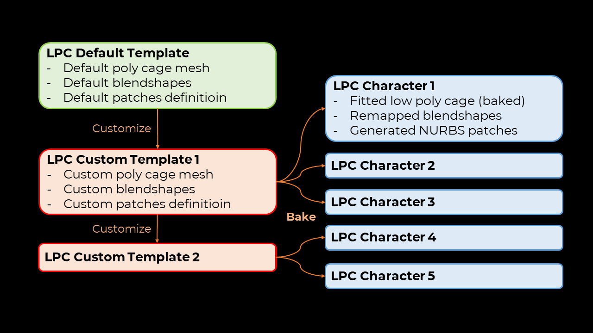
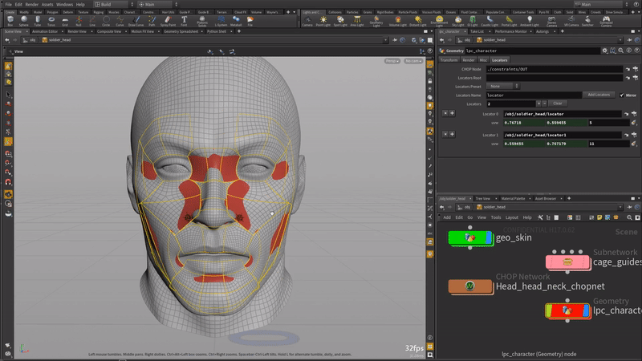
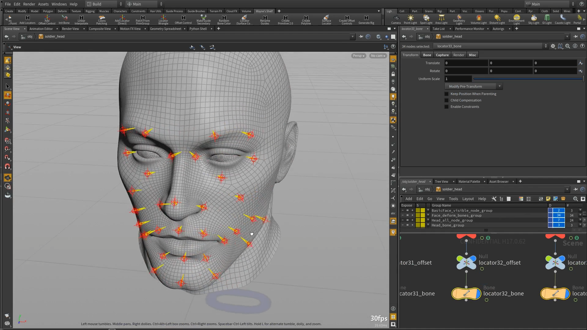
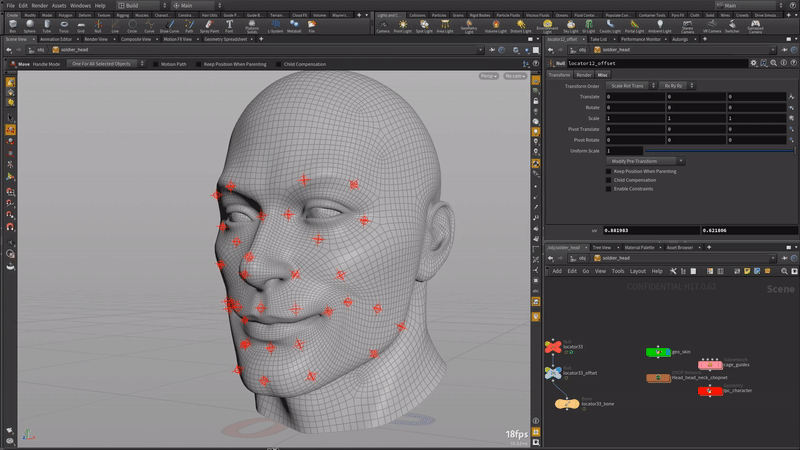
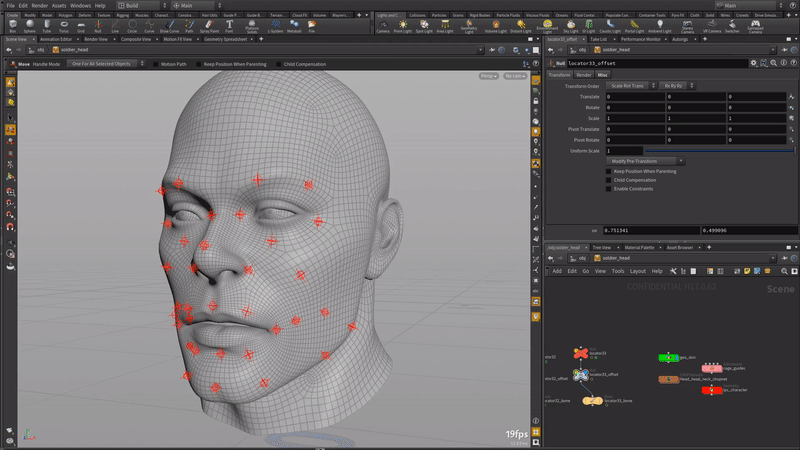

In Houdini 16.5, a basic facial auto rig, which I implemented, was included that allows users to add rigs for jaw and eyes. However, without a full face rig, the system is rather useless. Therefore, I designed and prototyped a full-face auto-rigging system for H17. This system is a FACS-based facial auto-rigging module integrated with Houdini's Autorigs. The solution, inspired by Jeremy Ernst's talk at GDC in 2011, automates the facial rigging process using a low poly face mesh. The use of low poly "cage" allows animation data and blendshapes to be transferable across all auto-rigged characters. Special patches are also attached to the character's face based on the low poly cage, which allows controllers to be moved in a confined uv space that best describes the movement of the muscles.


This diagram shows how the overall system works. The workings of each step will be described more in depth here.

The basis of the full-face auto-rigging system is the low poly cage. The low poly cage was created carefully with an optimal facial topology. By fitting the cage to the face geometry and using it to drive deformations, the auto-rigging can be independent of the topology of the input face geometry. The only manual work required for the whole auto-rigging process is the fitting of this cage. An early prototype of facial feature detection using OpenCV was developed to speed up this process, though it will not be investigated further until later releases.

Once the low poly cage is set, users can generate NURBS patches that are stitched to the low poly cage. When the low poly cage deforms, through blendshapes, the NURBS patches will move accordingly and influence the controls. Various ways of doing patches were tested in the development, including using coons patch or the subdivision limit surface. The main requirement was to achieve real-time animation (25-30 fps). In the end, NURBS was chosen as the method to represent the patches.

The default low poly cage template comes with a set of FACS-based blendshapes, and groups defining the NURBS patches. Users can customize the template by 1) changing the shape of mesh 2) changing/adding blendshapes and 3) defining additional NURBS patches. Once the low poly cage is fitted to the face, users can bake out the data from the low poly cage in to a low poly cage specific to the character. This ensures that the low poly cage is cached, as it won't be touched again, and all the default blendshapes are regenerated based on the new shape of the cage. The character-specific cage can be easily regenerated by modifying the customized template. Templates can also be saved and extended further for other characters.

The NURBS patches are where each bone will ultimately be constrained to. The location is defined by the locator/marker. Users can add locators directly to the patches, or the system provides presets based on typical facial mocap markers.

Once the markers are placed, the offset controls and the bones will be generated automatically with one offset control parented under a locator, and a bone parented under the offset control.

The offset control allows control of the bone in world space.

By surface constraining the locators to the NURBS patches, it allows the locators to move in the UV space instead of world space. This creates a more confined space for the locators to resemble the movements of muscles.